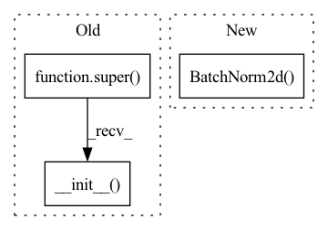

Pattern ID :2048

Before Change
Cross-Domain Instance Matching. arXiv:1711.08106.
def __init__(self, num_classes=0, loss={"xent"}, **kwargs):
super(ResNet50M, self).__init__()
self.loss = loss
resnet50 = torchvision.models.resnet50(pretrained=True)
base = nn.Sequential(*list(resnet50.children())[:-2])
self.layers1 = nn.Sequential(base[0], base[1], base[2])
After Change
// backbone network
self.conv1 = nn.Conv2d(3, 64, kernel_size=7, stride=2, padding=3, bias=False)
self.bn1 = nn.BatchNorm2d(64)
self.relu = nn.ReLU(inplace=True)
self.maxpool = nn.MaxPool2d(kernel_size=3, stride=2, padding=1)
self.layer1 = self._make_layer(block, 64, layers[0])
self.layer2 = self._make_layer(block, 128, layers[1], stride=2)
In pattern: SUPERPATTERN
Frequency: 3
Non-data size: 3
Instances
Fragment ID: 4989716
Project Name: vlsomers/bpbreid
Commit Name: 710b9ac1a28d418bddc41aeeda320ab4de4d17fe
Time: 2018-10-26
Author: k.zhou@qmul.ac.uk
File Name: torchreid/models/resnet.py
M Class Name: ResNet50M
N Class Name: ResNet
M Method Name: __init__(7)
N Method Name: __init__(3)
M Parent Class: nn.Module
N Parent Class: nn.Module
M File Name: torchreid/models/resnet.py
N File Name: torchreid/models/resnet.py
M Start Line: 71
M End Line: 84
N Start Line: 107
N End Line: 130
'>
Before Change
class ResNet(nn.Module):
def __init__(self, block, depth, output_classes=1000):
assert (depth - 2) % 9 == 0 // 164 or 1001
super(ResNet, self).__init__()
n = (depth - 2) / 9
nstages = [16, 64, 128, 256]
// one conv at the beginning (spatial size: 32x32)
self.conv1 = nn.Conv2d(3, nstages[0], kernel_size=3, stride=1,
After Change
super(ResNet_Cifar, self).__init__()
self.inplanes = 16
self.conv1 = nn.Conv2d(3, 16, kernel_size=3, stride=1, padding=1, bias=False)
self.bn1 = nn.BatchNorm2d(16)
self.relu = nn.ReLU(inplace=True)
self.layer1 = self._make_layer(block, 16, layers[0])
self.layer2 = self._make_layer(block, 32, layers[1], stride=2)
self.layer3 = self._make_layer(block, 64, layers[2], stride=2)
'>
Fragment ID: 4989717
Project Name: decile-team/cords
Commit Name: 798af04c991257c652c388af7a1fc4964c7f4f6a
Time: 2021-02-08
Author: krishnateja.killamsetty@utdallas.edu
File Name: cords/utils/models/resnet164.py
M Class Name: ResNet
N Class Name: ResNet_Cifar
M Method Name: __init__(4)
N Method Name: __init__(4)
M Parent Class: nn.Module
N Parent Class: nn.Module
M File Name: cords/utils/models/resnet164.py
N File Name: cords/utils/models/resnet164.py
M Start Line: 62
M End Line: 85
N Start Line: 163
N End Line: 182
'>
Before Change
dilation: int = 1,
norm_layer: Optional[Callable[..., nn.Module]] = None
) -> None:
super(Bottleneck, self).__init__()
if norm_layer is None:
norm_layer = nn.BatchNorm2d
width = int(planes * (base_width / 64.)) * groups
// Both self.conv2 and self.downsample layers downsample the input when stride != 1
After Change
self.act = mish
self.conv_expand = nn.Conv2d(
D, out_channels, kernel_size=1, stride=1, padding=0, bias=False)
self.bn_expand = nn.BatchNorm2d(out_channels, momentum=0.001)
self.shortcut = nn.Sequential()
if in_channels != out_channels:
self.shortcut.add_module("shortcut_conv",
'>
Fragment ID: 4989713
Project Name: ygzwqzd/lamda-ssl
Commit Name: 360768e49da2ff10157493a976817acc85f1ccd5
Time: 2022-01-17
Author: 1129198222@qq.com
File Name: Semi_sklearn/Network/ResNet.py
M Class Name: Bottleneck
N Class Name: ResNeXtBottleneck
M Method Name: __init__(7)
N Method Name: __init__(9)
M Parent Class: nn.Module
N Parent Class: nn.Module
M File Name: Semi_sklearn/Network/ResNet.py
N File Name: Semi_sklearn/Network/ResNet.py
M Start Line: 76
M End Line: 99
N Start Line: 31
N End Line: 68